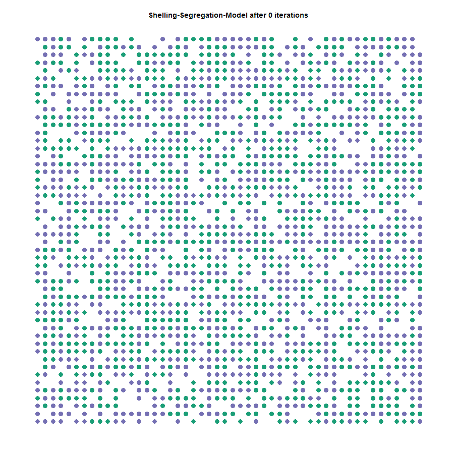
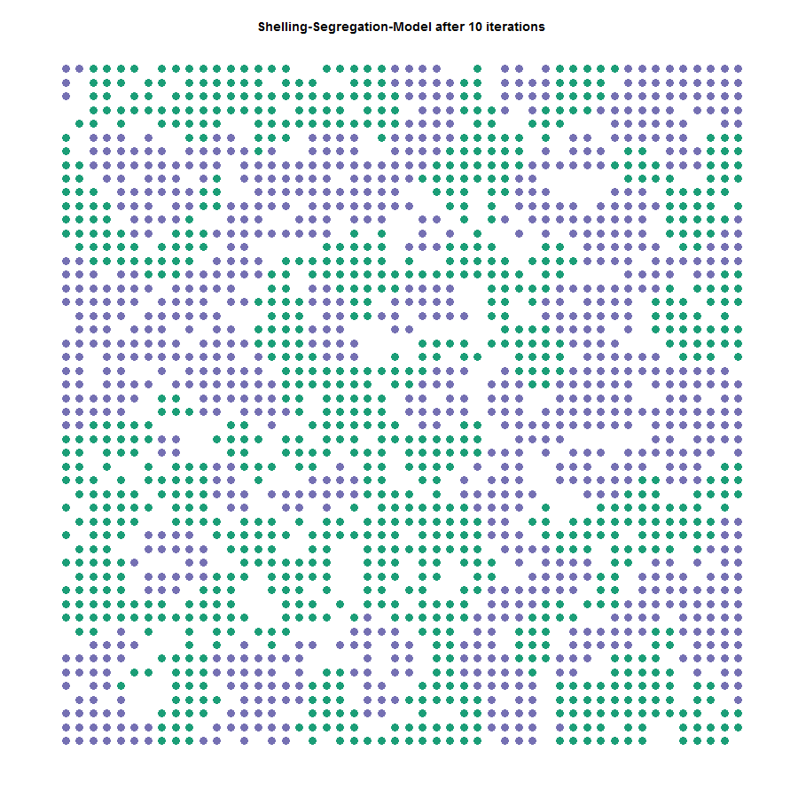
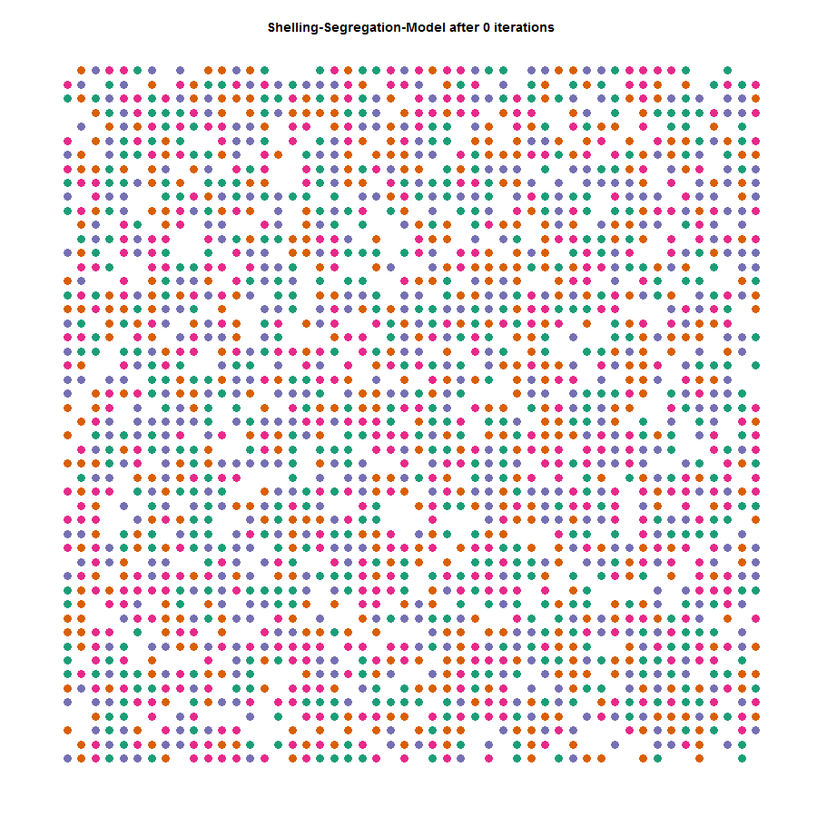
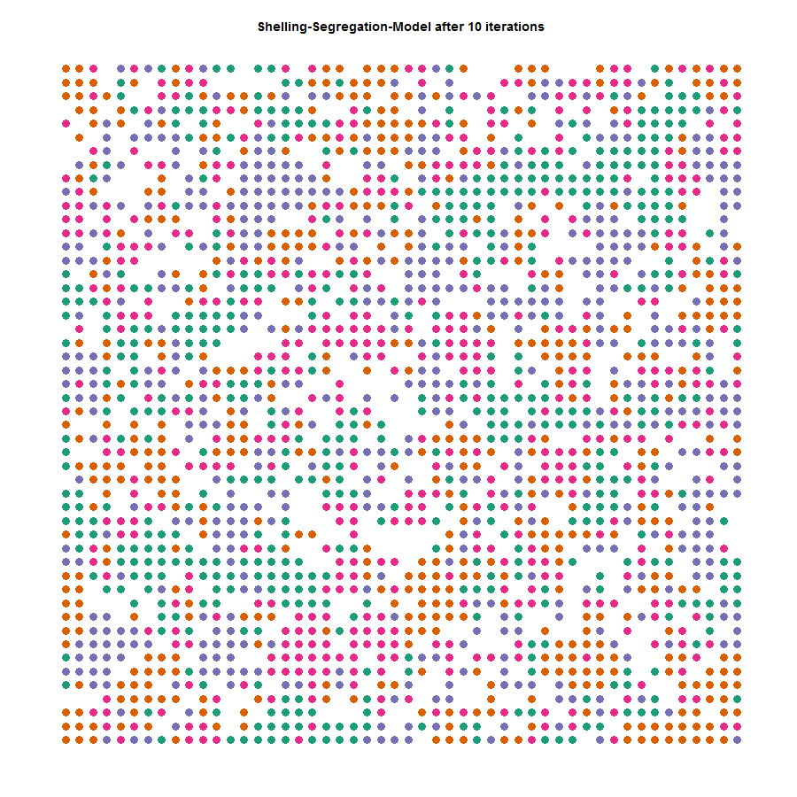
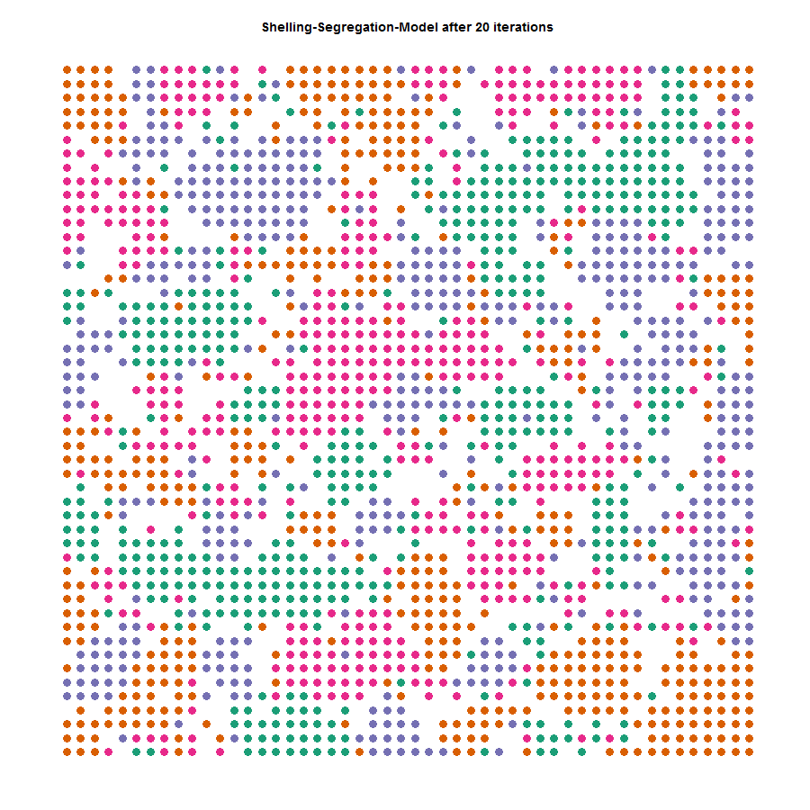
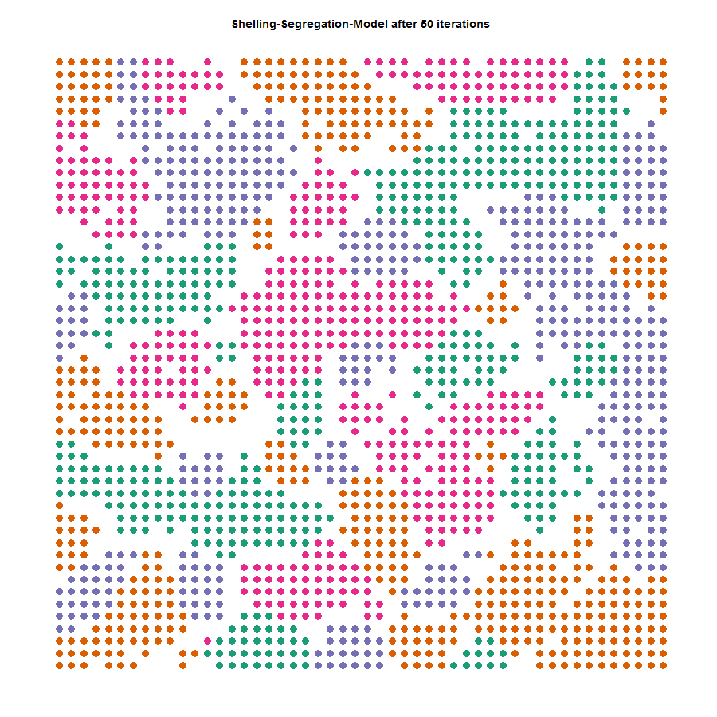

Agent Based Modelling with data.table OR how to model urban migration with R
Warning
After revisiting this blog 5 years later, I was not able to reproduce the code fully, see the addendum for a post-mortem.
Introduction
Recently I found a good introduction to the Schelling-Segregation Model and to Agent Based Modelling (ABM) for Python (Binpress Article by Adil). The model follows an ABM approach to simulate how urban segregation can be explained. I will concentrate on the R-code, if you want to know more about the Schelling-Segregation Model (which brought its creator a Nobel Price) and Agent Based Modelling you should head over to the binpress page! As my Python knowledge is not sufficiently large enough, I try to rebuild the ABM in R with some guidelines from the Python script, but as I use data.table and its specific functions, the code naturally deviates quite a lot.
Schelling-Segregation Model
The idea behind the Schelling Model is that we create an M x N grid that contains homes for our agents, which we simulate to belong to n different races, with a certain possibility that homes are empty. In each round I calculate a ratio of same-race neighbors over the total amount neighbors for each home (position on the grid). If the ratio falls below a certain threshold (in this case 50%), the agent becomes unhappy and will move to another (random) home. This process is iterated to find an equilibrium.
Basic Principles of the Code
The ABM is based on three self-written functions:
initiateSchelling()
- takes inputs of dimensions of the simulated area and the number of different races
- creates a data.table called schelling that contains the id for each position in the grid, x and y the coordinates, the race as well as distance and unsatisfied, which we will use later
plotSchelling()
- takes a text input that is used as the graph’s title
- it uses the
schellingdata.table and plots each agent
iterate()
- takes the number of iterations (= number of simulations) as well as the similarity threshold
- the function has another subfunction
is.unsatisfied()that checks for each row if the agent is unsatisfied - iterate first checks for each agent if she is unsatisfied, if so the agent will be moved
R-Code of the Functions
To fasten up the speed of the code, I use the data.table package including some of its specialties. If you are unfamiliar with the syntax of data.table, I recommend you to have a look at this excellent intro by yhat or the CheatSheet by DataCamp. For visualization, I use ggplot2 and RColorBrewer. The packages are loaded with:
library(data.table)
library(ggplot2)The code for the initiateSchelling()-function looks like this:
initiateSchelling <- function(dimensions = c(10, 10), n_races = 2){
# create "races" based on colours
races <- colours()[1:n_races]
# what percentage of the homes will be empty
perc_empty <- 0.2
# how many homes will be simulated
n_homes = prod(dimensions)
# calculates the number of agents
count_agents <- floor(n_homes * (1 - perc_empty))
# the characteristics that a home can have
races <- c("empty", races)
# the probabilities of each characteristics
probabilities <- c(perc_empty, rep((1 - perc_empty)/(length(races) - 1),
times = length(races) - 1))
# creates the global schelling data.table
schelling <<- data.table(id = 1:prod(dimensions),
x = rep(1:dimensions[1],
dimensions[2]),
y = rep(1:dimensions[2],
each = dimensions[1]),
race = sample(x = races,
size = n_homes,
prob = probabilities,
replace = TRUE),
# used to find the satisfaction of each home
distance = rep(NA, prod(dimensions)),
unsatisfied = rep(NA, prod(dimensions)))
}Secondly, the plotSchelling()-function looks like this:
plotSchelling <- function(title = "Schelling-Segregation-Model"){
# get races to get the right number of colors
races <- unique(schelling$race)
# find the dimensions of the grid to get the best dot size
dims <- c(max(schelling$x), max(schelling$y))
# plot the graph
p <- ggplot(data = schelling[race != "empty"],
aes(x = x, y = y, color = race)) +
# workaround to get relatively large dots that
# resize with the size of the grid
geom_point(size = 100/sqrt(prod(dims))) +
scale_colour_brewer("Dark2") +
# create a beatiful and mostly empty chart
theme_bw() +
theme(axis.line = element_blank(),
axis.text.x = element_blank(),
axis.text.y = element_blank(),
axis.ticks = element_blank(),
axis.title.x = element_blank(),
axis.title.y = element_blank(),
legend.position = "none",
panel.background = element_blank(),
panel.border = element_blank(),
panel.grid.major = element_blank(),
panel.grid.minor = element_blank(),
plot.background = element_blank(),
plot.title = element_text(lineheight=3,
face="bold",
color="black",
size=14)) +
# fixes the axis to avoid distortion in the picture
coord_fixed(ratio = 1) +
# lastly adds the title
ggtitle(title)
return(p)
}And lastly, the iterate()-function, that iterates over the checks for satisfaction and moves of the agents if necessary, looks like this:
iterate <- function(n = 10, similiarity_threshold){
# subfunction that checks for a given x and y value if the agent is
# unsatisfied (returns TRUE or FALSE)
is.unsatisfied <- function(x_value, y_value, similiarity_threshold = 0.5){
# gets the race for the agent
cur_race <- schelling[x == x_value & y == y_value, race]
# checks if the home is empty to
if (cur_race == "empty"){
return(FALSE) # empty houses are not satisfied, therefore will not move!
} else {
# creates the square of the distance
# I avoid to take the squareroot to speed up the code
schelling[, distance := (x_value - x)^2 + (y_value - y)^2]
# counts the number of agents that live less than two fields away
# (includes all adjacent agents) and that are similar
count_similar <- nrow(schelling[distance <= 2 &&
race == cur_race &&
distance != 0])
# same here except that it looks into different agents
count_different <- nrow(schelling[distance <= 2 &&
race != cur_race &&
race != "empty"])
# calculates the ratio
ratio <- count_similar/(count_similar + count_different)
# returns TRUE if the ratio is below the threshold
return(ratio < similiarity_threshold)
}
}
# creates a ProgressBar, although this is not necessary, it does look nice..
pb <- txtProgressBar(min = 0, max = 1, style = 3)
# for time-keeping-purposes
t <- Sys.time()
# iterates
for (iterate in 1:n){
# fills the boolean vector "unsatisfied"
# indicates if the household is unsatisfied
schelling[, unsatisfied := is.unsatisfied(x_value = x,
y_value = y,
similiarity_threshold =
similiarity_threshold),
by = 1:nrow(schelling)]
# move unsatisfied agents to an empty house
# find the IDs that are empty where agents can migrate to
emptyIDs <- schelling[race == "empty", id] # finds the id of empty houses
# finds the origin of the agents moving,
# aka. the old ID of each household moving
oldIDs <- schelling[(unsatisfied), id] # origin
# generates new IDs for each household moving
# note that households can move to the house of other moving agents
# also, agents can (by a small chance) choose to "move" to their
# existing home
newIDs <- sample(x = c(emptyIDs, oldIDs),
size = length(oldIDs),
replace = F) # target
# a new data.table that shows
# what race migrates from which origin_id to which target-id
transition <- data.table(origin = oldIDs,
oldRace = schelling[id %in% oldIDs, race],
target = newIDs)
# moves the agents to the new homes
schelling[id %in% transition$origin]$race = "empty"
schelling[id %in% transition$target]$race = transition$oldRace
# orders the schelling, although this takes some time,
# it is necessary for the other operations
schelling <- schelling[order(id)]
# updates the ProgressBar
setTxtProgressBar(pb, iterate/n)
}
close(pb)
timedif <- Sys.time() - t
# print out statistics for the calculation time
print(paste0("Time for calculation in seconds: ", round(timedif, 3), " or: ",
round(n / as.numeric(timedif), 3), " iterations per second"))
return(schelling)
}Results 1: 2 Races
By using the function I create a 50x50 grid with 2.500 agents and simulate 20 rounds (this process takes roughly a minute). A visualization is produced at 0, 10, and 20 iterations; after 20 rounds the 2-race simulation reaches an equilibrium as we can see by the few changes between the two states (10 and 20 iterations).
set.seed(42^2)
# initiate schelling
initiateSchelling(dimensions = c(50, 50), n_races = 2)
# plot schelling
plotSchelling(title = "Schelling-Segregation-Model after 0 iterations")
# iterate 10 times
schelling <- iterate(n = 10, similiarity_threshold = 0.5)
# plot the result after 10 iterations
plotSchelling(title = "Schelling-Segregation-Model after 10 iterations")
# iterate another 10 times
schelling <- iterate(n = 10, similiarity_threshold = 0.5)
# plot again after 20 iterations total
plotSchelling(title = "Schelling-Segregation-Model after 20 iterations")Although it seems that the model found an equilibrium after 10 iterations, there are still some minor changes between the two states, albeit only few.
Results 2: 4 Races
To see the ABM with 4 different races I used the following code to generate the following images.
set.seed(42^3)
# initiate schelling
initiateSchelling(dimensions = c(50, 50), n_races = 4)
# plot schelling
plotSchelling(title = "Schelling-Segregation-Model after 0 iterations")
# iterate 10 times
schelling <- iterate(n = 10, similiarity_threshold = 0.5)
# plot the result after 10 iterations
plotSchelling(title = "Schelling-Segregation-Model after 10 iterations")
A more notable change happens between the states after 10 and 20 iterations.
# iterate another 10 times
schelling <- iterate(n = 10, similiarity_threshold = 0.5)
# plot again after 20 iterations total
plotSchelling(title = "Schelling-Segregation-Model after 20 iterations")
# iterate another 30 times
schelling <- iterate(n = 30, similiarity_threshold = 0.5)
# plot again after 50 iterations total
plotSchelling(title = "Schelling-Segregation-Model after 50 iterations")
Here we see that the model took more iterations to find an almost steady-state after 50 iterations (there are still some agents that will move in the next round, can you spot them?).
Outro
These few lines show nicely what ABMs are, how they can be used and how they simplify complex human behavior. Although data.table is enormously fast, the process still takes a lot of time to calculate. If you have any idea how to speed up the code, I would love to hear about it in the comments! If you have any other questions or remarks, I am of course happy to hear about them in the comments as well. Lastly, if you want to see other implementations of the Schelling-Segregation Model in R, you can visit R Snippets or R-bloggers.
Addendum from 2020
As noted in the blogpost, this code is horribly slow and does not produce the plots I advertised originally.
This is, of course, not data.table’s or R’s fault, but past me’s.
Revisiting the code leads to some cringe moments for me as lots of pieces can be made more clearly and more efficient.
I guess I have learned a lot in the last 5 years.
Here are a few things I would do differently as of 2020
- not use global variables (i.e., not use
<<-), instead each function should take the data as its first argument - especially ABMs lend themselves to object-oriented programming as each state (of agents) depends on other states. Therefore
R6might be worth investigating. - use a different code style:
initiate_schelling()(snake_case) instead ofinitiateSchelling()(camelCase)
But most importantly:
As this is a good exercise for more efficient programming.
For example, each round filters the data table over, creating unnecessary computation time.
Therefore, I ported the code to Rcpp and created a package some time ago.
Introducing the SchellingR package.
Which has some nice features, e.g., emojis and/or animations as well as very fast execution thanks to Rcpp
library(SchellingR)
set.seed(1234567)
# run the schelling model on a 10x10 grid
sh <- run_schelling(size = 10, percent_empty = 0.2,
threshold = 0.5, number_of_groups = 2,
max_rounds = 100)
plot_grid(sh, select_round = 8, title = TRUE, emoji = TRUE) or even better
or even better
plot_grid(sh, select_round = 8, title = TRUE, emoji = TRUE, animate = TRUE)
David Zimmermann, PhD
Data Scientist
I am an economist by training, turned programmer/data scientist who loves to program with R, Python, and C++.